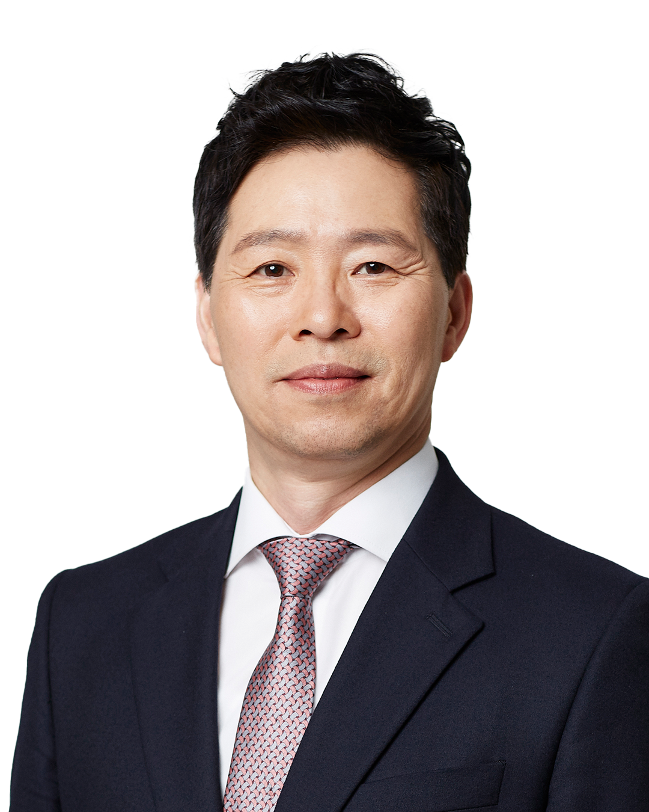
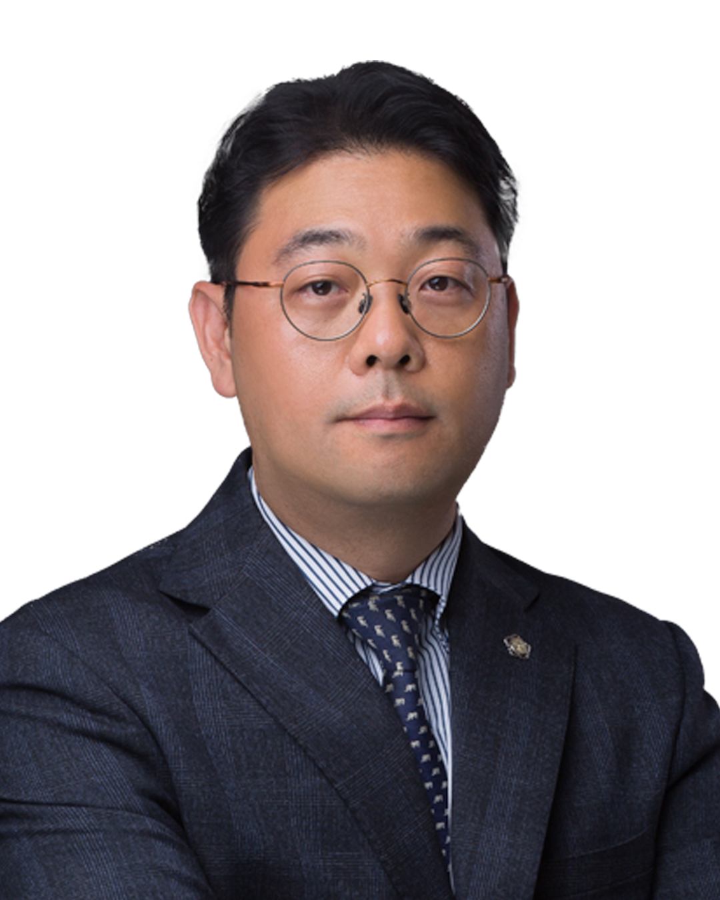
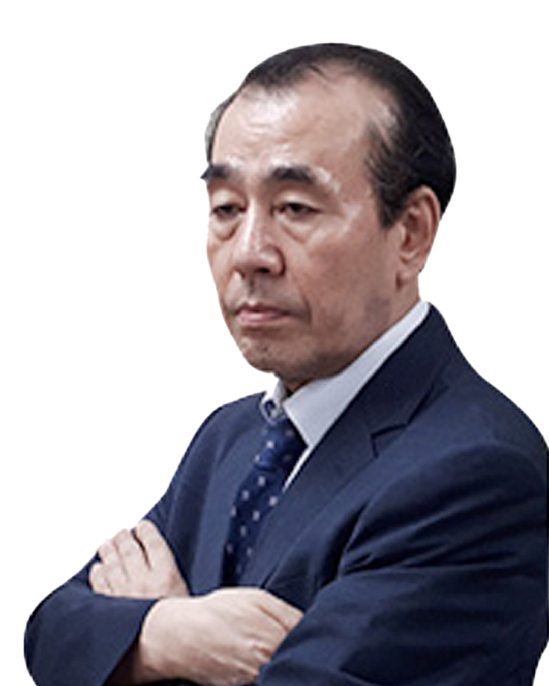
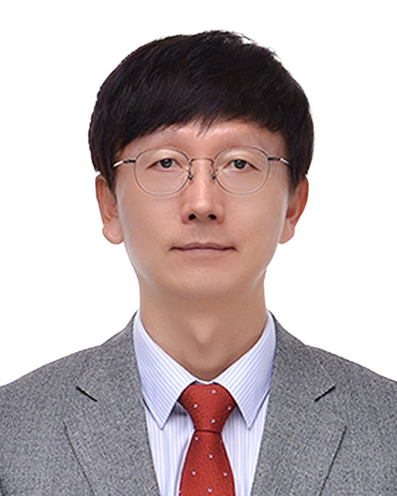
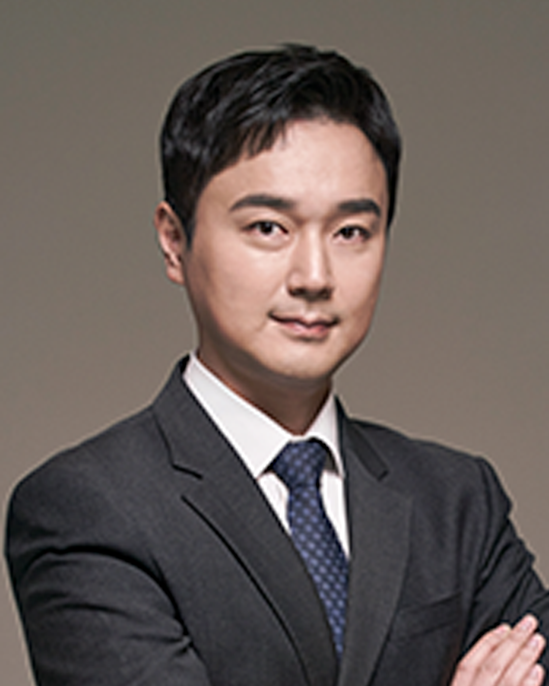
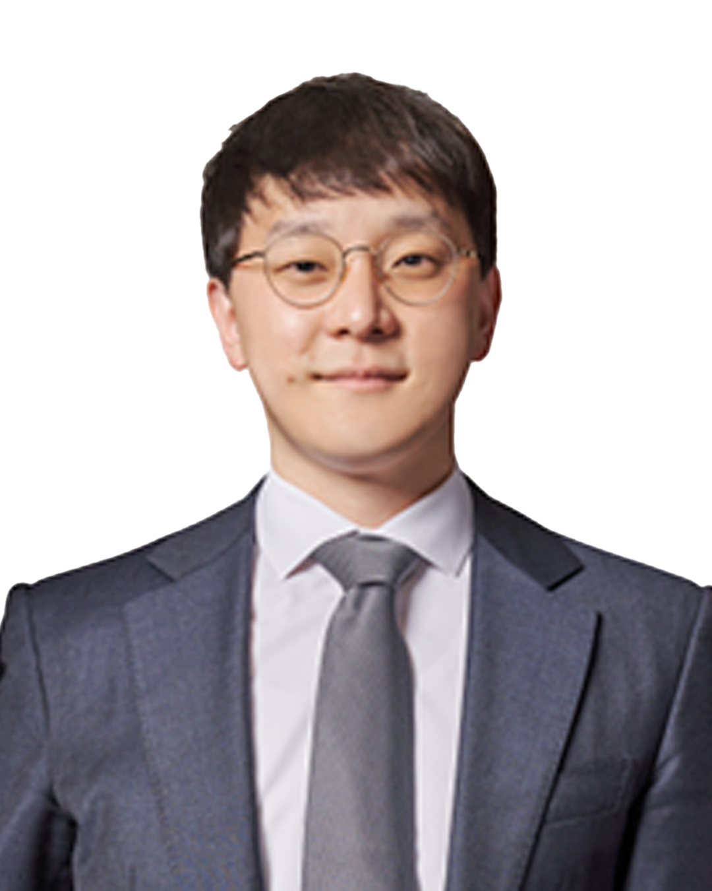
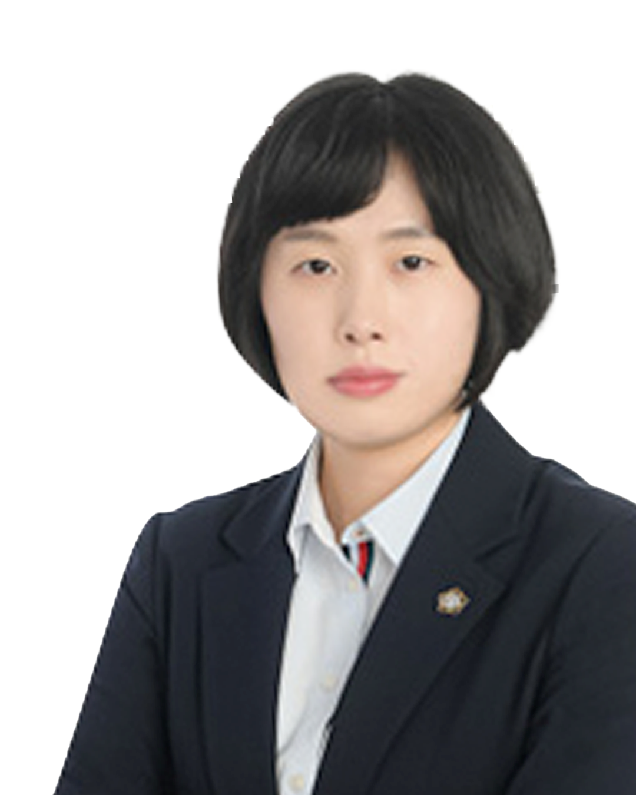
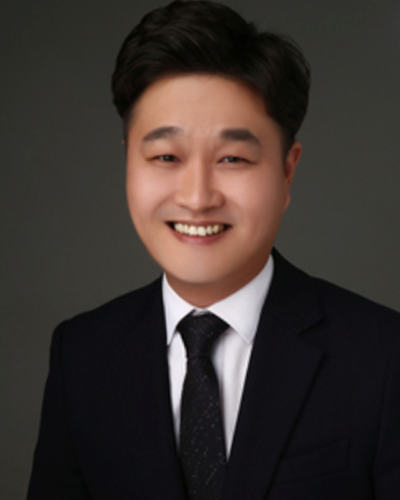
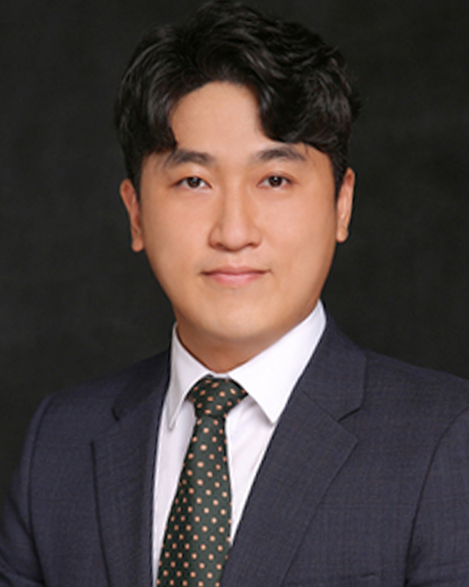

대표 변호사

대표
하영주
대표변호사 | 서울 본사
형사법 전문
법학박사
사법연수원 수료(1989년) • 단국대학교 대학원 법학박사
대표
엄운용
대표변호사 | 서울 본사
농축산법
의료법
수의사
서울대 수의학과 졸업 • 제5회 변호사시험 합격
대표
김진환
대표변호사 | 서울 강남
기업법무
45회 사법시험
사법연수원 35기 수료 • 한양대학교 졸업
대표
최상무
대표변호사 | 울산
기업회생
수사심의위원
울산지방검찰청 수사심의위원 • 중소기업진흥공단 전문컨설턴트
대표
정환희
대표변호사 | 대구
법학박사
변호사시험출제위원
서울대 법대 졸업 • 사법연수원 수료(1999년)

대표
조성전
대표변호사 | 청주
민사법 전문
집회시위자문위원
서울대 미학과 졸업 • 충북대 법학전문대학원 졸업

대표
전정수
대표변호사 | 대전
前 군판사
육군 검찰관
연세대 정법대 졸업 • 사법연수원 수료(1989년)

대표
양희선
대표변호사 | 대전
前 철도공사법무팀장
43회 사법시험
한양대 행정학과 졸업 • 사법연수원 33기 수료
소속 변호사
송철훈
변호사 | 서울
연세대 법대
손우태
변호사 | 서울
前 검사장
이경창
변호사 | 서울
서울대 법대

곽정기
변호사 | 강남
前 경찰청
예상균
변호사 | 강남
前 공수처
박중구
변호사 | 강남
51회 사법시험

송현석
변호사 | 강남
동아대 로스쿨

최한울
변호사 | 강남
9회 변호사시험

이상민
변호사 | 강남
수의사
김규철
변호사 | 울산
前 군판사
천성연
변호사 | 울산
가사법 전문

고은빛
변호사 | 울산
경희대
한웅
변호사 | 서울
38회 사법시험
이종렬
변호사 | 울산
서울대 법학과
박성진
변호사 | 울산
50회 사법시험
정은경
변호사 | 울산
이혼 전문
손해사정사

사정사
이기창
손해사정사 | 광주
10년 경력
사정사
고영수
손해사정사 | 광주
임상병리사
사정사
박성윤
손해사정사 | 광주
前 H화재

사정사
이용재
손해사정사 | 광주
방사선사